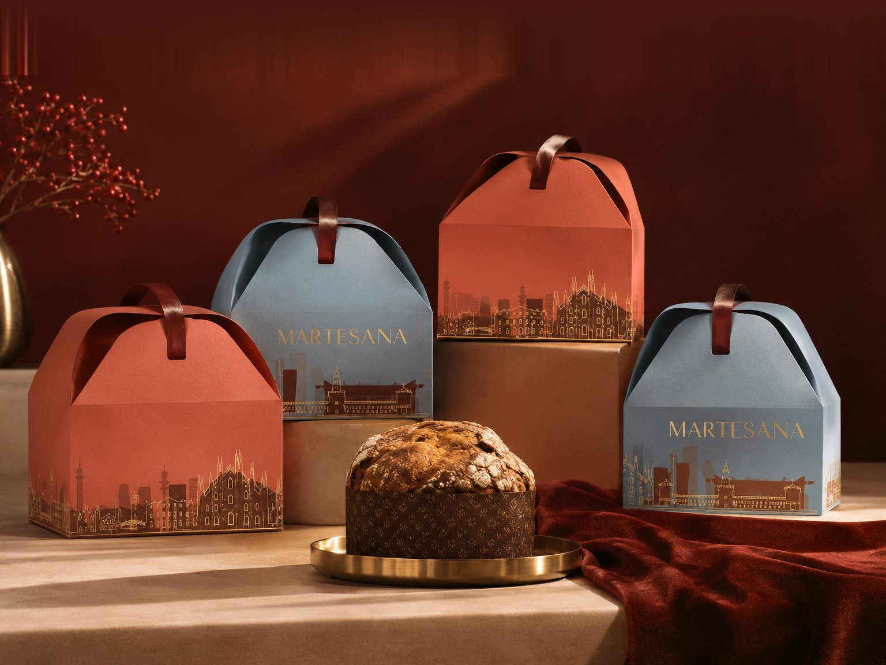
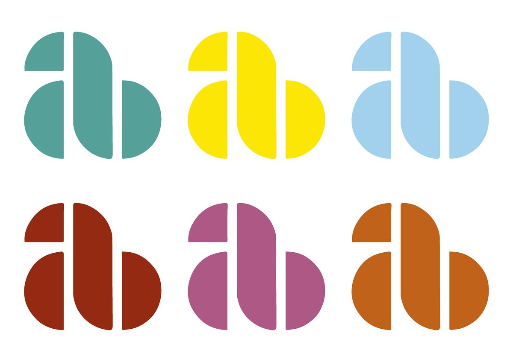
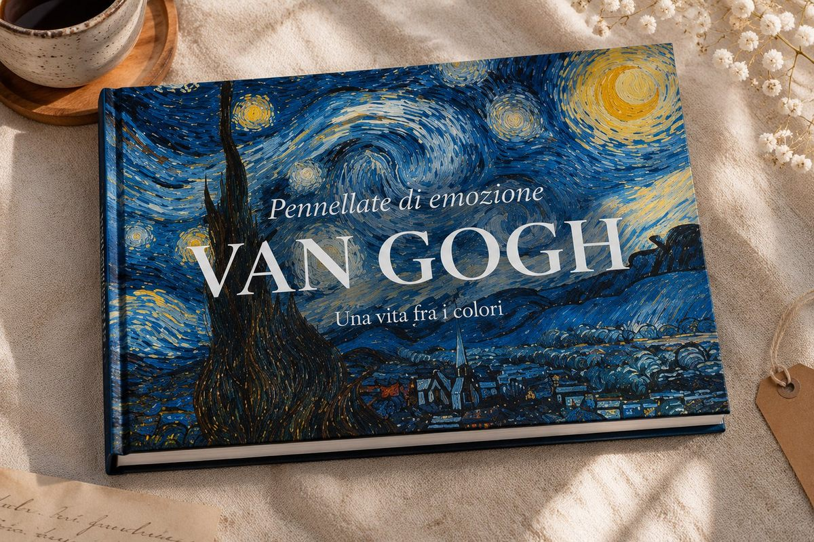
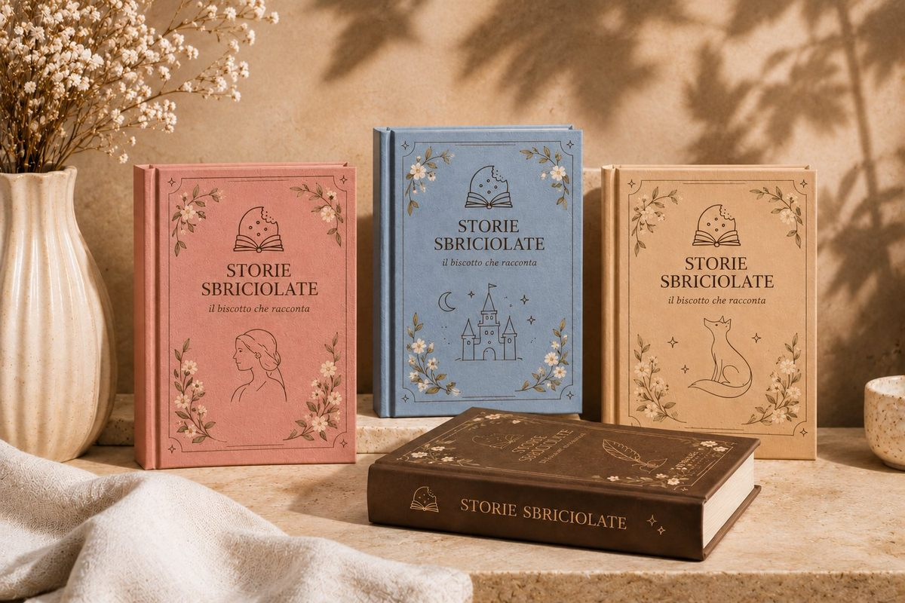
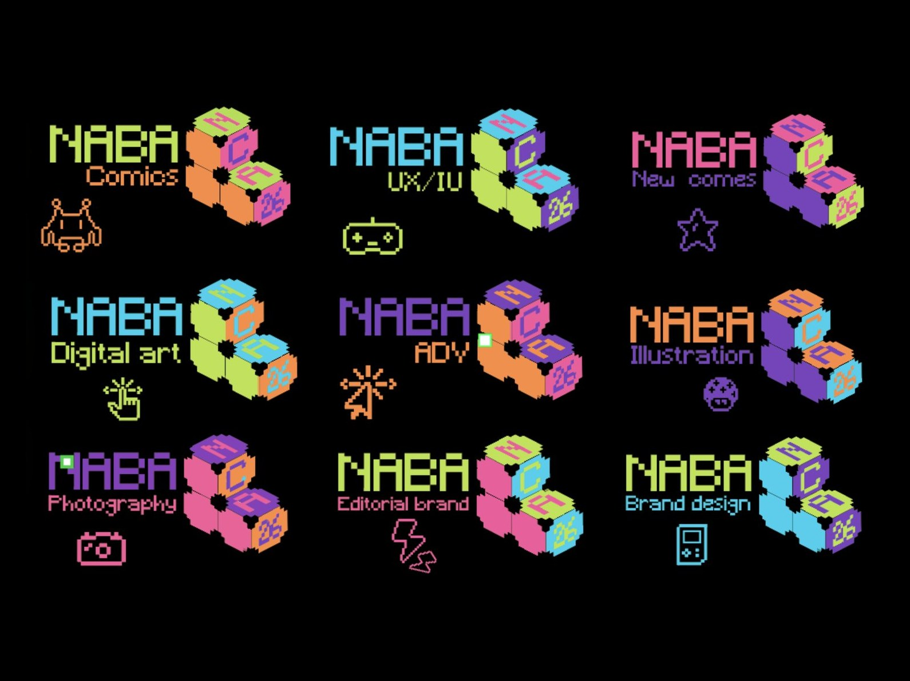
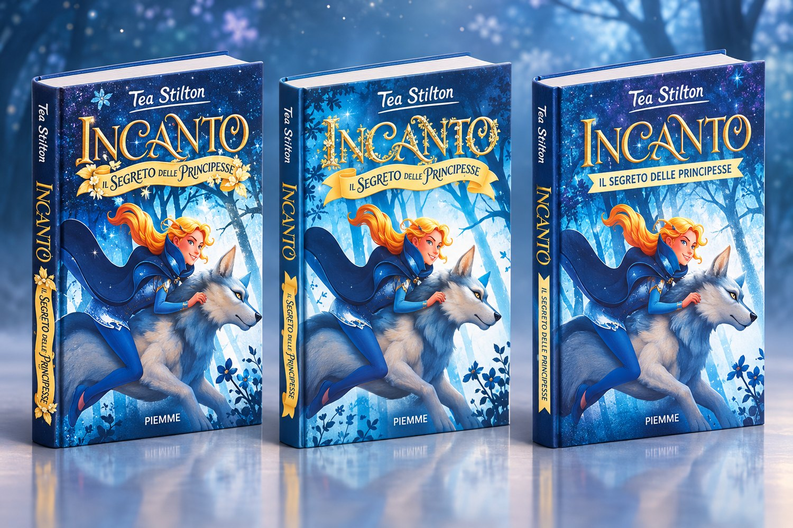

Graphic designer & art director con una forte sensibilità editoriale.
Ho sempre avuto tante idee, spesso anche tutte insieme. La parte che mi piace di più del design è proprio riuscire a prenderle, metterle in ordine e trasformarle in qualcosa che prima non esisteva.
Mi interessano soprattutto brand identity, editoria e comunicazione visiva, ma non mi piace lavorare sempre nello stesso modo. Un progetto può essere pulito e minimale, un altro molto più colorato, ironico o sperimentale: per me dipende sempre da quello che sto raccontando.
Sono molto attenta ai dettagli e posso cambiare una cosa cento volte finché non mi convince davvero, però cerco sempre di non perdere di vista il motivo per cui la sto facendo. Alla fine quello che voglio è semplice: creare progetti che abbiano personalità, siano chiari e abbiano senso.
Il libro e la rivista come oggetto e come esperienza: ritmo delle pagine, gerarchia, immagini, margini, pause. Impaginare, per me, è una forma di storytelling.
Costruire un mondo visivo coerente: concept, mood, immagini, tipografia, palette, tono di voce. Un'identità si deve riconoscere ancora prima di leggerne il nome.
Sistemi visivi con una ragione di esistere. Logo, palette, tipografia e applicazioni che tengono insieme ogni touchpoint del progetto.
Le parole non arrivano alla fine. Una headline può diventare immagine, una frase può diventare identità. Copy con una voce, non scritto da un algoritmo.
Il digitale quando resta editoriale e narrativo. Un sito può essere anche una pubblicazione, un archivio, una storia interattiva.
La ricerca non è una fase da superare in fretta: è parte del progetto. Riferimenti da arte, cinema, fotografia, moda e cultura pop.






Non mi interessa che sia bello.
Mi interessa che sia giusto.
Prima capire cosa vale la pena raccontare. Poi trovare il modo più interessante per farlo.
Prima della forma viene la domanda. Poi arrivano ricerca, riferimenti, tipografia, composizione, parole e sistemi grafici.
Non cerco la complessità a tutti i costi: se una soluzione semplice è quella giusta, preferisco quella. Il mio obiettivo non è dimostrare di saper progettare — è fare in modo che il progetto funzioni.
Un progetto può essere elegante, ironico, pop, editoriale o minimale. Non ho un unico stile da applicare a tutto: ho un modo preciso di guardare le cose.
Per lo stesso motivo non parto mai da un template: ogni progetto — questo sito compreso — è costruito da zero attorno al suo contenuto.
Lavoriamo insieme
Cerco progetti che abbiano qualcosa da dire — un libro, una rivista, un'identità, un sito, un progetto culturale. Se hai un contenuto da trasformare in linguaggio, scrivimi.